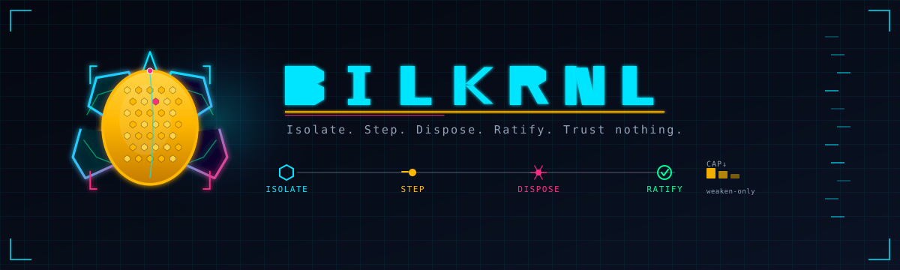
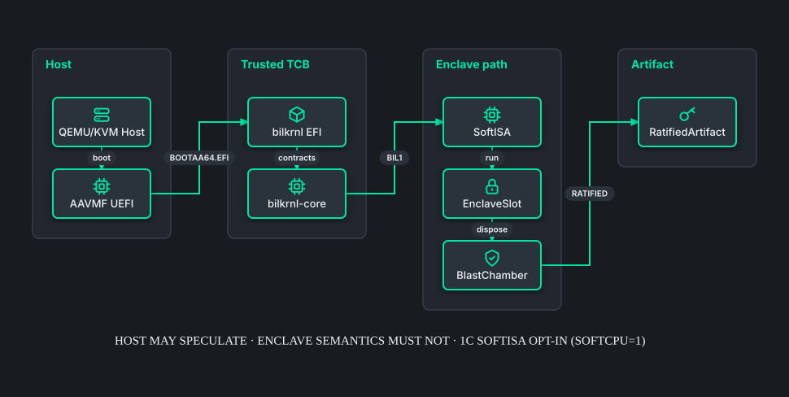
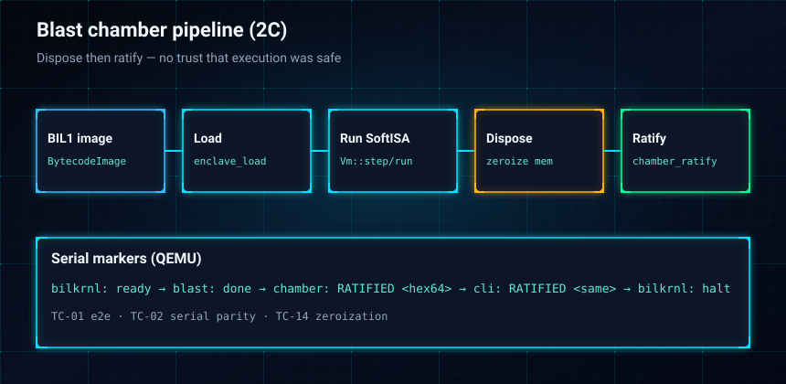
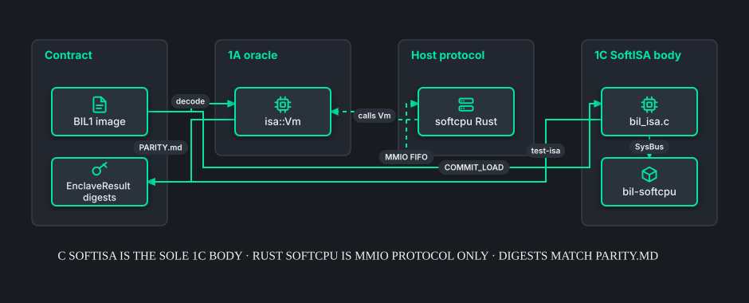
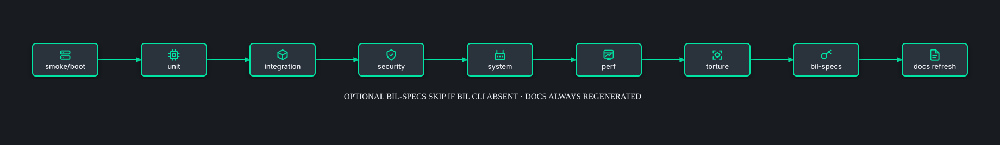
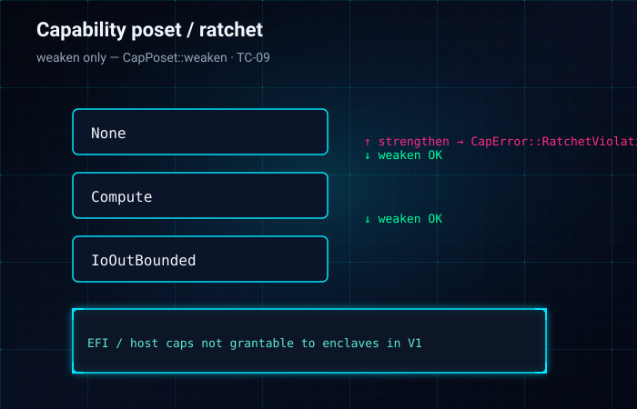

UEFI-bootable research kernel: deterministic soft-ISA enclaves, capability poset/ratchet, and a blast chamber that disposes memory then ratifies results with no trust that the run was safe.

Host → UEFI → TCB → SoftISA / Enclave / Chamber

Load → Run → Dispose → Ratify (2C)

1A Vm · host MMIO wrap · 1C bil_isa.c

scripts/verify.sh tiers + docs refresh

Capability ratchet — weaken only (TC-09)
rustup target add aarch64-unknown-uefi sudo apt-get install -y qemu-system-arm qemu-efi-aarch64 inkscape ./scripts/verify.sh